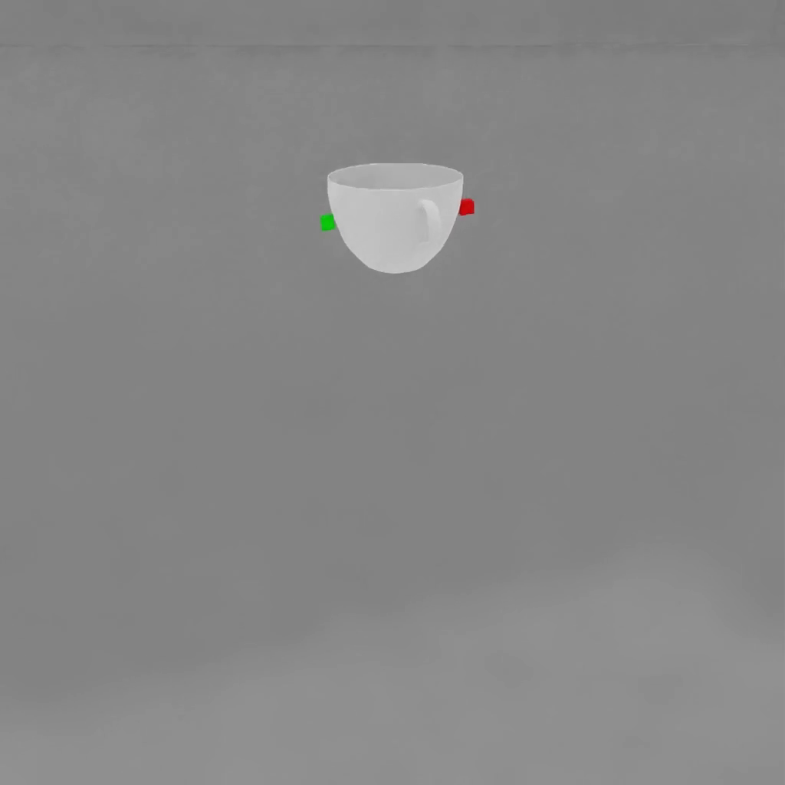

grasp_and_lift (FET005 Grasp)#
Property |
Value |
|---|---|
Test name |
grasp_and_lift |
Feature(s) |
|
Engine |
Kit / Isaac Sim (>=2024.2.0) |
Test version |
1.3.5 |
Wall-clock timeout |
1200 seconds |
Summary#
A parallel-jaw gripper positions at each declared grasp identifier on the asset, closes onto it under real gravity, lifts it, holds it through a circular horizontal orbit shake, and checks its observed motion after the release request.
What Pass Guarantees#
At least one declared grasp identifier completes the configured grasp, lift, hold, shake and release criteria with the generated fixture in the selected runtime. An overall pass does not guarantee that every identifier succeeds; measured partial failures remain visible in the per-identifier metrics. A pass does not independently certify material coefficients, mass calibration or a different gripper’s performance. Unexpected setup, control, observation or required-cleanup errors leave execution incomplete rather than establishing an asset failure or a successful measurement.
What It Checks#
Identifier discovery accepts the official GSP.001 direct BasisCurves
grasp_identifier* form and the legacy named Xform wrapper with an immediate
child points-based line. Instance-proxy content is traversed. Direct curves
use their own first two authored points; wrappers retain their first eligible
child’s first two points. The complete source-prim transform, including nested
parent/curve scale, produces the world segment in the existing stage units.
The selected rigid body’s inverse composed transform produces tracking-local
points, without changing stage units or inventing grasp geometry.
A named curve already used by a legacy wrapper is not a duplicate trial; additional independent named curves still receive their own trials. Required finite, invertible transforms and finite nonzero segments are checked before fixture creation. Structural validation and native grasp success are separate: accepting the documented identifier form does not prove that it can be grasped.
The test iterates every grasp_identifier* prim authored on the asset. For each identifier, it runs a fresh simulation scene, positions a standardized parallel-jaw gripper at the identifier pose, and drives the gripper through nine sequential phases. The identifier may live under the rigid body or in a separate annotation scope. The test first uses a nearest rigid-body ancestor when one exists; otherwise it selects the rigid body whose world bound contains the largest portion of the authored grasp segment, with the complete mounted asset as a compatibility fallback. The selected body is used consistently for stability tracking, fixture sizing, and later motion checks. The test checks that the asset rises when the gripper lifts, meets the hold and circular-orbit motion criteria, and has the required observed bounding-box-center drop after the release request.
The tracked body center is the midpoint of its world-aligned bounding box, not a mesh centroid or physical center of mass. Center displacement, minimum box Z and grasp-midpoint separation are different geometric proxies; none is a native collision-contact or force measurement.
The test records N/A when the loaded asset has no grasp_identifier* prims,
because there is no grasp metadata to evaluate. An unavailable asset root or
incomplete composition is an execution error. A named identifier with an
unsupported prim form stays unassessed. The active runtime’s validated physics
prerequisite is checked separately. If at least one identifier completes
all nine phases, the behavioral result is a pass; it fails when every evaluated
identifier returns a measured phase failure. Partial measured failures are
recorded in metrics. Unexpected fixture, control or required live-observation
exceptions propagate as setup/runtime errors and do not become failed grasp
identifiers.
World-space grasp points retain the complete composed transform, including valid parent and marker scale. Before physics initialization, authored transforms are used for placement and body selection. During evaluated Newton motion, complete live Fabric bounds and body transforms are required; missing observations cannot be replaced with authored rest poses, previous values, zeros or motor targets. Malformed required state likewise stops execution.
PhysX joint-state reads must resolve an authored state value rather than the schema’s fallback zero; a legitimately observed, authored zero remains valid. Drive targets may use legal schema defaults but are not state measurements.
The current Core evaluate extra requires Evaluate[kit] >=2026.9.0rc2,<2026.11 and engine-kit
>=2026.9.0rc3,<2026.11, admitting compatible prerelease and stable updates
within this API generation. Install the tier extra to apply its declared requirements.
The stopped per-identifier cleanup
uses that Kit API’s layer-aware removal of generated fixture prims. For local
or companion-MR verification, install both built wheels together; do not assume
an older indexed Kit package implements this cleanup. Each later identifier
reloads the asset into a cleared test scene; previous pads and previous simulated
asset poses must not participate in its stability or grasp checks.
Room-floor suppression is verified from composed USD before physics starts.
A rejected floor edit is a setup error on every supported Kit version, not a
gripper failure or an instruction to change the asset.
Per-identifier metrics retain unique existing identifier names. When distinct
identifier paths share a name, their output aliases receive deterministic
suffixes so one trial cannot overwrite another’s measurements. The
grasp_<alias>_identifier_path metric maps each alias to its complete prim path.
The empty-grasp check uses both jaws’ observed positions from the same sample,
not a left-only assumption or independently combined minima from different
frames. Its total-aperture threshold retains twice the existing per-jaw
pad_touching_tolerance, preserving the established symmetric-jaw boundary.
Preconditions#
This evaluation checks the active runtime’s validated rigid-body family:
FET003_RigidBody.PhysX for PhysX, FET003_RigidBody.Newton for Newton, and
CAP003_RigidBody.MuJoCo for MuJoCo, accepting the family’s validated versions.
Legacy FET_003_PHYSX, FET_003_NEWTON and FET_003_MUJOCO aliases are also
recognized for compatible validation records. An asset with a validation record but without the
matching feature is skipped rather than failed. An external or forced run with
no validation record proceeds because the dependency cannot be checked. An
unknown SIMREADY_PHYSICS_RUNTIME value is skipped with an explicit reason.
How It Works#
The nine phases run in order, stopping at the first failure within each identifier. The values below describe the registered defaults; valid config overrides can change the motion windows and thresholds, and can disable Shake.
The Stability phase places the asset with its bounding-box bottom just above the ground plane and allows it to settle under gravity (9.81 m/s²). The phase waits up to 3.0 s for each coordinate of the tracked bounding-box center to stay within the 0.002 rest tolerance of the window’s initial sample for 1.0 s. If the timeout expires before rest is detected, the phase proceeds anyway; it never blocks progress. This center-only settling check does not establish zero angular velocity or unchanged box corners.
The GripperPositioning phase moves the gripper gantry to the grasp midpoint, including the generated pad ground-clearance offset. The phase waits until its observed position converges within 5 mm of that same commanded target or 2.0 s elapses, whichever comes first. Newton requires the live gantry pose; an authored rest transform is not proof of convergence. A measured timeout fails the identifier; missing required pose or fixture state leaves execution incomplete.
The Grasping phase sizes the fixture from the resolved rigid body, then closes the gripper with a default target-ramp limit of 0.04 m/s. Empty or non-finite body bounds stop fixture setup with the concrete setup error; they are never used in pad-scale arithmetic. The commanded aperture includes 0.005 m of additional closure per jaw beyond the estimated surface so the generated drive can develop holding force rather than stopping at the analytical bounding-box width. This is a target preload, not a measured contact or compression depth. Convergence requires the observed bilateral closure proxy, each finger’s range to stay within 0.0005, and the tracked box center’s motion relative to the last sample to stay within 0.0005 over a 0.1 s window. Convergence can begin during the ramp; the jaws preserve its stable target for a continuous 0.3 s dwell before lifting. The bounded settling budget is the larger of
close_settle_seconds(0.3 s) andclose_max_settle_seconds(2.0 s); the former is not an extra mandatory post-ramp dwell. If the measured jaws reach the empty-grasp threshold or cannot satisfy the configured settling criterion, the phase fails. These observations alone do not distinguish missing collision geometry from ejection, placement, control or other contact/setup problems.The Lifting phase freezes the gantry’s final horizontal target from GripperPositioning, stops following the authored grasp line, and raises the gantry over 1.0 s with a smoothstep motion profile. The requested height is twice the longest edge of the grasped body, clamped to 0.3–0.5 m so large or eccentric assets do not receive an artificial high-speed lift. Required observed body bounds determine that height; unavailable or invalid bounds cannot silently choose the minimum. The phase passes when the tracked bounding-box center has risen at least 0.02 m from its position at lift start.
The HoldBeforeShake phase holds the gripper position for 1.0 s. The phase fails if the tracked bounding-box center drops by at least 0.10 m from its position at hold start, or its Z coordinate goes below
floor_level - floor_margin(0.02 with the defaults). This is a center-height proxy, not native ground-contact detection; the current failure message’s “touched ground” wording refers to that proxy.The Shake phase moves the gantry in a circular horizontal orbit at 2.0 Hz with a 0.01 m radius for 1.5 s. A 0.25 s smooth envelope spirals into and out of the orbit so the first frame does not impose a discontinuous lateral target. It fails if the body’s minimum box Z reaches or goes below
floor_level + floor_margin(-0.02 with the defaults), or the grasp-to-jaw midpoint offset changes from the phase-start offset by at least 0.05 m. This relative-offset proxy tolerates rotation around the held point but does not measure physical contact or identify why separation occurred.The HoldAfterShake phase holds the gripper position again for 1.0 s under the same center-drop and center-height proxy criteria as HoldBeforeShake.
The Opening phase opens the gripper over 0.5 s. Once the opening ramp completes, it requests disabled collision on both generated fixture pads and verifies the required USD writes and authored-state readback. It cannot complete before that release request, including when a configured ramp exceeds the observation window. Authored-state acknowledgment does not prove that Newton changed its compiled collider state. The phase records the first observed object-movement frame (
object_release_frame), not a native contact-release timestamp; a rejected fixture update is a setup/runtime error, not an asset grasp failure.
Newton additionally checks the public compiled model flags for both exact generated pad shapes: enabled after fixture initialization and disabled at the first existing Dropping tick. Missing/unqualified readback or still-enabled compiled flags prevents a drop verdict and leaves execution incomplete. No additional simulation step or private model mutation is used for this check. Compiled flags acknowledge that model state only; they are not measured contacts, impulses or proof of the solver’s effective collision response.
The Dropping phase waits up to 3.0 s for the tracked bounding-box center to fall by at least the larger of 0.05 m and that body’s bounding-box height. Its reference Z is sampled when Opening begins; it is not reset to a measured contact-release instant. Required valid body bounds determine this threshold; unavailable or malformed bounds cannot silently reduce it to the configured minimum. After detecting the required fall, the phase retains a default 1.0 s observation tail, bounded by the overall simulation budget. A completed fall meets the release-motion criterion, not a measured no-contact guarantee.
Collision geometry is run exactly as authored. Any runtime-specific cooking or fallback behavior is owned by the selected engine.
The generated finger controls are runtime-specific. PhysX uses two balanced
linear drives because PhysxMimicJointAPI does not enforce prismatic follower
motion. Each PhysX jaw retains the established safety-factored fixture load;
the test does not weaken that force when replacing the unsupported mimic.
Newton creates one NewtonActuator with NewtonPDControlAPI and
NewtonMaxEffortClampingAPI for each jaw and commands both jaw coordinates to
the same symmetric target. Newton’s per-jaw effort and PD gains are derived
from the safety load, generated-pad friction, and pad mass to avoid unstable
acceleration with lightweight fixture pads. Friction credit is capped at 1.0
when sizing normal force; higher coefficients still improve contact but do not
erase the solver margin required by curved or eccentric grasps. Newton actuator prims live below
the generated articulation root so Newton discovers them before its first
physics cook. This control authoring is part of the temporary test fixture and
does not modify the tested asset.
For both runtimes, the fixture force is derived from every positive, finite
PhysicsMassAPI value below the tested asset, including values inside
instanceable runtime payloads. If the composed asset provides no usable mass,
the legacy bounding-box volume estimate is used and identified as a fallback
in the Kit log. The log records the selected source, number of authored mass
values, resolved mass, and generated jaw force so unexpectedly aggressive
fixture behavior can be diagnosed directly.
For multibody assets, motion and geometry measurements use the rigid body that owns the current grasp identifier. Mass sizing still uses every authored mass below the complete mounted asset, so connected bodies contribute to the load. This prevents an unrelated wide body from determining the jaw aperture and prevents motion of an ungrasped joint from being mistaken for grip instability.
Failure Cases#
Symptom |
Likely cause |
|---|---|
GripperPositioning timeout: gripper cannot reach the target within 2.0 s |
Check the commanded target, live gantry motion, control capability and generated clearance before attributing the timeout to the identifier |
Grasping fails: pads reached the empty-grasp threshold |
Inspect observed jaw aperture, object motion, placement and effective collision geometry; ejection or a fixture/control problem can also produce this outcome |
Lifting fails: object did not rise |
Inspect the observed object and jaw motion, effective contact and authored physics; placement, fixture force or control can also prevent lifting |
HoldBeforeShake or HoldAfterShake fails: object dropped |
The observed motion exceeded the configured hold criterion; inspect contact, control, grasp placement and physics properties to establish the cause |
Shake fails: object left the jaws |
The authored grasp midpoint separated from the live jaw midpoint by the configured tolerance, or the selected body reached the floor during the 0.01 m circular orbit; inspect mass, friction, collision, and grasp placement |
Dropping fails: object did not fall after release |
Inspect live jaw state, remaining generated fixture contacts and asset constraints; first verify that the selected backend actually applied the release request |
Newton jaws do not close, or only one jaw is commanded |
Verify that both generated |
Fixture setup, control or required observation raises an error |
Use the original exception. Check imports, native capabilities, body mapping, bounds and generated fixture writes before changing the asset; execution is incomplete. |
How to Fix#
If the gripper cannot converge on a grasp identifier, inspect the identifier prim path and pose to confirm that it targets a surface on the asset rather than empty space or an interior point.
Do not reparent a valid identifier merely because it lives in a /Grasp
annotation scope. Confirm that its world-space segment crosses the intended
rigid body’s bound. If fixture setup fails, use the reported exception and Kit
log to distinguish a runtime dependency problem from ambiguous body selection;
mass and friction tuning cannot repair either setup failure.
An empty-grasp failure is not proof that the asset lacks a collision mesh. Check the live object motion and jaw geometry: the object may have moved away, been ejected, or never been intercepted by the generated fixture. Verify the selected rigid body’s active colliders and the governing runtime contract before recommending an asset change. Conditional authoring hints are not native contact measurements. In particular, absence of authored Newton SDF settings alone does not prove that an allowed mesh collider produced no contacts.
If lifting or holding fails, first qualify fixture placement, commands and observations, then inspect how the active runtime resolves authored or implicit mass, inertia and material properties. A zero/unset mass opinion is not by itself proof of invalid dynamics; the backend can compute mass from geometry and density. A failed hold does not alone establish low friction or justify retuning a valid asset.
If the shake phase fails, compare the captured video with the recorded object and jaw motion. Ejection can originate in fixture placement, controls, effective collider geometry or authored physics; video alone does not establish which contact or property caused it. Do not tune friction or mass until that ownership has been investigated.
If the asset author confirms that an identifier is intentionally not graspable, review that identifier against the selected grasp requirement before a separately authorized asset repair. Do not remove metadata or tune physics merely to hide an unresolved fixture, control or backend limitation.
Expected Result#
Every completed phase contributes its result dictionary, including successful
intermediate phases, under grasp_<alias>_phase_<phase_name>. The alias maps to
the exact identifier path. Phase-owned dictionaries preserve repeated field
names such as the before/after-shake hold duration; the compatible flat
grasp_<alias>_<field> metrics retain the latest value of a repeated name.
Failure dictionaries and the overall identifier result remain independently
authoritative. Evidence forwarding is diagnostic-only: an unavailable metric
transport does not change the measured result or prove that a phase did not run.

For each grasp identifier on the asset, the parallel-jaw gripper moves to the identifier pose, closes around the asset, lifts it off the floor, holds it in mid-air, moves in a circular horizontal orbit, then opens. The tracked body is expected to follow the gripper sufficiently to meet the configured phase criteria; a criterion failure applies to that identifier, not automatically to every declared grasp.
This illustrates the default completed procedure. Minor shifting need not fail: the configured lift, hold and shake proxies determine each identifier’s result. A failed clip can end before later phases, and a disabled Shake phase has no orbit.
Notes and Caveats#
The Shake phase tolerates ordinary rotation or limited shifting in the jaws, but fails when the grasp-to-jaw relative offset changes by at least 0.05 m even if the minimum-box-Z floor proxy has not been reached.
The Dropping phase does not check ground overlap. Its tracked bounding-box center is not a physical centroid, and its release-motion criterion does not determine whether a collider penetrates the floor. The FET003 Physics family evaluates its separately configured bounding-box floor-overlap proxy, not exact collision penetration.
The configured close-settling checks and post-stability dwell delay lifting until the bilateral/object-motion proxies have converged. They are not contact force measurements; use the achieved finger positions, body motion and original setup errors to diagnose a failed convergence window.
Defaults use 240 nominal observation steps per second and request capture every 16 observations for 15 fps encoded video. Warmup, rebuilding and render retries can add physics/render ticks not represented in this nominal phase clock. Length values above describe the usual metre-scale Kit fixture stage. The tracker’s geometry comparisons operate in stage units; custom execution must retain the actual stage scale rather than assuming a schema or metric suffix converted the observations. Internal bounding-box and finger histories support the phase metrics and video; this procedure does not currently export shared MotionEvidence JSON/CSV plots. Do not infer precise video-frame synchronization or native contacts from them.
Collision meshes are run exactly as authored. Inspect the active engine log for runtime-specific collider cooking, approximation, or fallback diagnostics.
Required physics stop, generated-controller release and temporary-configuration restoration must succeed. A failed stop or controller release withholds dependent topology edits and leaves the worker for required scene teardown/retirement. Optional evidence failures cannot replace the first execution or cleanup error. Native dependency-version warnings remain environment qualification caveats, not demonstrated asset defects.
After an evaluated phase fails, the observation tail is diagnostic only. Missing tail observations or camera/capture errors stop that tail without replacing the retained phase result or manufacturing samples; missing media is disclosed as a diagnostic limitation. Cancellation and interrupts still propagate. Required stop and cleanup failures still leave execution incomplete. A failed required controller release remains unsafe on later cleanup attempts: clearing a Python handle is not acknowledgment of a native controller close.